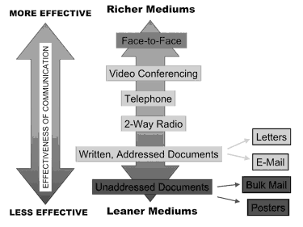
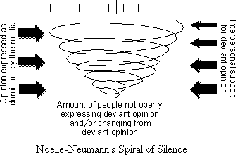

विचारवंत: फ्रेड सीबर्ट, थिओडोर पीटरसन आणि विल्बर श्राम (1956)
सिद्धांताचे स्पष्टीकरण: माध्यमे आणि समाज यांच्यातील संबंध आणि अशा संबंधामागील सामाजिक, राजकीय तत्त्वे यांचा अभ्यास माध्यम सिद्धांतांमधे होतो. नॉर्मेटिव्ह सिद्धांतात मात्र माध्यमांची मूल्ये काय असावीत याबाबत विचार मांडला गेला आहे. त्याव्यतिरिक्त माध्यमांवर ताबा कोणाचा आहे याची विशिष्ट चर्चा होते.
या विचारवंतांनी सामाजिक आणि राजकीय संरचना पाहून चार सिद्धांत मांडले.
1) अथॉरिटेरिअन सिद्धांत – जेव्हा सरकार एकाधिकार पद्धतीने माध्यमांवर ताबा ठेवून असते.
2) सोविएत सिद्धांत – साम्यवादाच्या वैचारिक चौकटीत राहून माध्यमे काहीही व्यक्त करू शकतात.
3) लिबर्टेरियन सिद्धांत – माध्यमे कुठल्याही सरकारी बंधनापासून मुक्त असतात
4) सोशिअल रेस्पाँसिबिलिटी सिद्धांत – माध्यमे मुक्त असतात मात्र समाजाभिमुख असतात.
परंतु जे देश शीत युद्धाच्या काळात अलिप्त राहिले त्यांनी मुळातच या विचारवंतांनी मान्य केलेल्या सामाजिक आणि राजकीय चौकटी मानल्या नाहीत. त्यामुळे आणखी दोन सिद्धांत तयार झाले:
डेव्हलपमेंट कम्युनिकेशन सिद्धांत – संज्ञापनाशिवाय विकास होऊ शकत नाही असे हा सिद्धांत सांगतो. माध्यमे विकासासाठीच्या कार्यक्रमांसाठी जबाबदार असतात आणि राज्यव्यवस्थेतील नियम आणि काही बंदी त्यांच्यावर लागू होतात. या सिद्धांताबाबत आक्षेप असा की अनेकदा विकास म्हणजेच सरकारी जाहिरातबाजी इतकाच संज्ञापनातून बोध होतो.
डेमोक्रटायझेशन/डेमोक्रटिक पार्टिसिपेंट मीडिया सिद्धांत – माध्यमांच्या व्यापारीकरणाला आणि माध्यमांमधील नोकरशाहीला विरोध या सिद्धांताचा गाभा आहे
सिद्धांताची उपयुक्तता: हे सिद्धांत आपल्याला माध्यमांवर ताबा कोणाचा असावा याबाबत विचार करायला लावतात.
Links for more reading:

विचारवंत: एकोणिसाव्या शतकाच्या उत्तरार्धात कुर्ट झादेक लेविन याच्या सामाजिक मानसशास्त्राच्या अभ्यासातून गेटकीपिंगची संकल्पना तयार झाली. 1970च्या दशकात मॅकूम्ब्स आणि शॉ यांनी त्याचा संबंध माध्यमांच्या अजेंडा सेटिंगशी जोडला.
सिद्धांताचे स्पष्टिकरण: बातमीचे उघड स्वरूप आणि माध्यम संस्थेचा अजेंडा यांच्या आधारे बातमी कशाची होईल याची निवड करणे याला गेटकीपिंग म्हणतात. बातमीचे मूल्यांकन आणि छाननीची एखाद्या माध्यम संस्थेतील प्रक्रिया गेटकीपिंग सिद्धांताने स्पष्ट होते.
गेटकीपिंगचे चार स्तर आहेत –
वार्ताहराच्या पतळीवरील गेटकीपिंग,
उपसंपादक/संपादकाची पातळी,
जाहिरातदाराची पाताळी आणि
माध्यम मालकाच्या पातळीवरील गेटकीपिंग.
सिद्धांताची उपयुक्तता: माहिती आणि बातम्यांचे प्रसारण करण्यात गेटकीपिंग होते हे आता सर्वांनाच मान्य आहे. या सिद्धांताचा उपयोग संस्थांमधील व्यवस्थापन आणि कर्मचारी यांच्यातील संज्ञापनाचा अभ्यास करण्यासाठीही होतो कारण यातही गेटकीपिंग होत असते.
Further reading:
लिंक 1

विचारवंत: फ्रँक्फर्ट येथील पाच विचारवंतांनी मिळून क्रिटिकल सिद्धांताची मांडणी केली त्यामुळे याला फ्रँक्फर्ट स्कूल ऑफ थॉट म्हटले जाते. हर्बर्ट मार्कूस, थिओडोर अडोर्नो, मॅक्स हॉर्खायमर, वॉल्टर बेंजामिन आणि थोड्या काळाने युर्गेन हाबरमास हे ते पाच विचारवंत.
सिद्धांत स्पष्टीकरण: प्रँक्फर्ट स्कूलवर महायुद्धांच्या काळातील राजकीय संघर्षांचा गहिरा परिणाम झाला. तेथील विचारवंताना पश्चिम यूरोपातील कामगार वर्गाच्या क्रांतीच्या पिछाडीचा (जेथे वर्ग क्रांती होईल असे मार्क्सने भाकीत केले होते) आणि नाझी विचारसरणीच्या यशाचा जर्मनी सारख्या तांत्रिक आणि अर्थशास्त्रीय दृष्ट्या प्रगत राज्यावर जो परिणाम झाला त्याचा प्रभाव पडला.
भांडवली व्यवस्थेतील इतर उद्योगांप्रमाणे जनमाध्यमे वस्तूंचे उत्पादन करतात आणि विकतात. मात्र ही उत्पादने लोकांना वाटतात ती नसतात. कार्यक्रम अथवा जाहिरातींमधे दाखवलेल्या वस्तू ही उत्पादने नसतात. व्यक्तिमत्व म्हणजे काय तर केवळ चमकणारे पांढरे दात, लांब काळेभोर केस इतकेच, शरीराच्या नैसर्गिक वासापासून, भावभावनांपासून स्वातंत्र्य. जाहिरात केलेली वस्तू ही फसवी आहे हे माहीत असूनही ग्राहक ती विकत होण्यास उद्युक्त होतात यातच जाहिरातींचं यश आहे, असे अडोर्नो आणि हॉर्खायमर यांनी मत मांडले.
गरजा, विचार आणि वर्तणूकीत एकसारखेपणा आणून मोठ्या प्रमाणात उत्पादने तयार करायची आणि विकायची ज्यातून एकसारखे उपभोग घेणारा विशिष्ट ‘मास’ समाज निर्माण होईल असा तो काळ होता. फ्रँक्फर्ट स्कूलच्या विचारवंतांनी या काळात ‘व्यक्तीचा अंत’ झाला असे जाहीर केले. व्यक्तिगत आचारविचारांतून सामाजिक आणि सांस्कृतिक प्रगती घडवून आणण्याचा काळ संपला आणि मोठमोठ्या संस्था आणि संघटनांनी व्यक्तींवर ताबा मिळविला. स्थिर, सर्वानुरूप वागणार्या, रूढिवादी अशा कॉर्पोरेट भांडवलशाही संस्थांचा त्या काळात वरचष्मा होता. या संस्थामधील स्त्री आणि पुरुषांच्या संघटना, मोठ्या प्रमाणावर उपभोग घेणे आणि जन संस्कृतित सहभागी होण्याचा कल यांमुळे एक अत्यंत संघटित आणि सामूहिक सामाजिक व्यवस्था निर्माण झाली.
फ्रँक्फर्ट स्कूलने ‘कल्चर इंडस्ट्री’ (सांस्कृतिक उद्योग) अशी संकल्पना मांडली. मोठ्या प्रमाणात उपभोग्य वस्तू तयार करणे, जन संस्कृतिची निर्मिती करणे आणि त्यायोगे एक ग्राहक समाज तयार करणे ज्याच्या वस्तूंच्या आवश्यकता आणि इच्छा समाज संघटन आणि एकजिनसीपणा यांमुळे एकसारख्या होतील असे उद्दिष्ट्य या कल्चर इंडस्ट्रीचे होते. हा काळ सांस्कृतिक एकजिनसीपणाचा होता जेथे रेडिओ आणि दूरचित्रवाणीवर खूप निर्बंध होते आणि अतिसामान्य पॉप संगीत, चमकदार हॉलिवुड चित्रपट, इत्यादींची मोठ्या प्रामाणात निर्मिती होत होती.
Further reading:
लिंक 1

विचारवंत: नोम चॉम्स्की आणि एड्वर्ड हर्मन यांनी 1988 साली माध्यम उद्योगाचा अभ्यास करत असताना हा विचार मांडला
सिद्धांत स्पष्टीकरण: प्रॉपगांडा सिद्धांतालाच पुढे वाढवत मन्युफॅक्चरिंग कंसेंट सिद्धांत तयार झाला. कोर्पोरेटच्या मालकीचे असलेल्या माध्यम संस्था या व्यापारी स्पर्धेत उतरलेल्या असतात आणि त्यांना जाहिराती आणि नफा यासाठी एकामेकांशी स्पर्धा करायची असते. अमेरिकेतील माध्यमांबाबत चॉम्स्की सांगतात की माध्यमांमध्ये ‘फिल्टर’ असतात. उदाहरणार्थ मालक, जाहिरातदार, बातम्या तयार करणारे, मांडणारे जे माध्यम विषय ठरवतात आणि कुठल्याही प्रकारचा विरोध होऊ देत नाहीत.
सिद्धांत उपयुक्तता: माध्यमांवर जसजसा कॉर्पोरेटचा ताबा वाढत जाईल तसतसा चोम्स्की यांच्या विचारांचे महत्त्व वाढत जाते. मात्र या परिस्थितीत नव माध्यमांमुळे बदल होतो आहे.
Further reading:
लिंक 1
सिद्धांत स्पष्टीकरण: चोवीस तास प्रक्षेपित होणार्या दूरचित्रवाणी वाहिन्यांचा एकंदरीत राजकारण आणि अर्थकारण यांबाबतच्या नीती आणि धोरणांवर परिणाम होतो असे हा सिद्धांत सांगतो. या सैद्धांतिक मांडणीची सुरुवात सीएनएन या अमेरिकतील खाजगी वाहिनीच्या 1980च्या दशकातील आखाती युद्ध, बर्लिनची भिंत पाडली जाणे, बोस्निया येथील जातीय संघर्षाच्या प्रक्षेपणानंतर झाली. या सैद्धांतिक मांडणीचे विरोधकही आहेत. या सिद्धांताच्या बाजूने असलेले विचारवंत असे मानतात की चोवीस तास प्रक्षेपित बातम्यांमुळे विशिष्ट लोकमत तयार झाले आणि याचा परिणाम अमेरिकेच्या काही पराराष्ट्र धोरणांवर झाला.
सिद्धांताची उपयुक्तता: राजकारणी आणि प्रशासक यांनी सीएनएन इफेक्ट होत नाही अशी आग्रही भूमिका घेतली आहे. मात्र माध्यम अभ्यासक आणि विचारवंतांनी याच्या उपयुक्ततेचा अभ्यास आवश्यक असल्याचे सांगितले आहे. सीएनएन इफेक्ट होत नाही असे सांग़ण्याचे एक कारण म्हणजे युद्धाची दृश्ये इतकी सर्रास आणि इतक्या जास्त प्रमाणात दाखविली जातात की त्यांचा परिणाम होईनासा झाला आहे.
Further reading:
लिंक 1

विचारवंत: वॉल्टर लिपमॅन याने 1922 साली याची पहिल्यांदा मांडणी केली आणि पुढे मॅक्स्वेल मॅकूम्ब्स आणि डॉनल्ड शॉ यांनी 1972 साली त्याला पुढे नेले.
सिद्धांत स्पष्टीकरण: आपण माहितीसाठी अधिकाधिक माध्यमांवर अवलंबून होतो आहोत. त्यामुळे महत्त्वाची माहिती कुठली आहे आणि एकूणच आपल्यासाठी महत्त्वाचे काय आहे ते माध्यम ठरवू शकताहेत. या ठरवण्याच्या प्रक्रियेला अजेंडा सेटिंग असे म्हणतात. माध्यमांद्वारे प्रेक्षकांसाठी अशाप्रकारे अजेंडा तयार करणे याला राजकीय व व्यापारी कारणे आहेत. माध्यमे बातम्यांची विशिष्ट चौकट तयार करतात आणि गेटकीपिंगच्या प्रक्रिये द्वारे लोकांना काय व कसे सांगावे हे ठरवतात. यामुळे संपूर्ण सत्य स्पष्ट होत नाही. अशाप्रकारे काही विषयांना महत्त्व प्राप्त होते व काही विषय दृष्टिआड होतात.
रॉजर्स आणि डिअरिंग यांनी अजेंडा सेटिंगचे तीन प्रकार सांगितले आहेत.
1) सार्वजनिक अजेंडा सेटिंग
2) माध्यम अजेंडा सेटिंग
3) नीतीचा अजेंडा सेटिंग
सिद्धांताची उपयुक्तता: माध्यमांचा अजेंडा हा सामान्यत: राजकारण, परराष्ट्र धोरण, इतिहास, इत्यादींच्या बाबतीत स्पष्ट होतो.
Online resources:.
Further reading:

विचारवंत: अनेक माध्यम अभ्यासकांनी फ्रेमिंगबाबत आपले विचार मांडले आहेत. त्यांतील महत्त्वाचे आहेत टॉड गिट्लिन (1980), शांतो अय्यंगार (1990) आणि फेअरहर्स्ट आणि सार (1996)
सिद्धांताचे स्पष्टीकरण: माध्यमे एखादी घटना अथवा विषय कशा प्रकारे मांडतात आणि प्रेक्षक कशाप्रकारे त्याचा अर्थ लावतात याला फ्रेमिंग म्हणतात. माध्यमे काही घटना, व्यक्ती, विषयांवर अधिक भर देतात ज्यामुळे प्रेक्षक त्यांकडे अधिकाधिक एका विशिष्ट चौकटीतून (फ्रेम) ‘पाहतात’ जी माध्यमांनी तयार केलेली असते. माध्यम संस्थेच्या उद्दिष्टांना अनुसरून या चौकटी तयार केल्या जातात. त्यामुळे फ्रेमिंग सिद्धांत अजेंडा सेटिंग सिद्धांतासोबत अभ्यासला जातो. अशाप्रकारे दोन्ही सिद्धांतांचा उपयोग करून माध्यम अभ्यास, संज्ञापन अभ्यास, मानसशास्त्र, मानववंशशास्त्र आणि समाजशास्त्रात अभ्यास केला जातो आहे.
शांतो अय्यंगार याने दोने फ्रेम्स स्पष्ट केल्या:
एपिसोडिक फ्रेम: बातम्या ज्यावेळी घटनात्मक चौकटीतून मांडल्या जातात तेव्हा त्यांना एपिसोडिक म्हटले जाते. अशा चौकटीमुळे एखादी घटना अथवा विषय सार्वजनिक चर्चेत नगण्य होऊन जातो. अशा बातम्यामधून घटनेचे विविध पैलू स्पष्ट होत नाहीत, त्यामागील कारणमीमांसा होत नाही. याचा संबंध पॅराश्यूट जर्नलिझमशी जोडता येऊ शकतो.
थीमॅटिक फ्रेम: जेव्हा बातमीची चौकट विषयात्मक आणि विश्लेषणात्मक होते तेव्हा तिला थीमॅतिक फ्रेम म्हणतात. याचा संबंध इमर्शन जर्नलिझमशी जोडता येऊ शकतो.
सिद्धांताची उपयुक्तता: या सिद्धांताचा उपयोग निवडणूक प्रसार, जाहिराती, कॉर्पोरेट बातम्या, राज्याची नीती इत्यांदींचा अभ्यास करण्यासाठी होतो.
Further reading:
विचारवंत: फिलिप टिकनॉर, जॉर्ज डॉनॉह्यू आणि क्लारिस ओलियन यांनी 1970च्या दशकात हा सिद्धांत मांडला
सिद्धांताचे स्पष्टीकरण: कुठल्याही इतर धनाप्रमाणे, ज्ञानही एक प्रकारचे धन आहे आणि त्याचे समाजातील वितरण विषम आहे ज्यामुळे काही लोकांकडे ते अधिक असते तर काही लोकांकडे त्याचा अभाव असतो. माध्यम संदेशांमुळे ही विषमता वाढत जाते आणि ज्या लोकांचा आर्थिक सामाजिक स्तर उंचावलेला असतो ते अधिक ज्ञान प्राप्त करू शकतात कारण त्यांच्याकडे माहितीचे स्रोत अधिक असतात आणि त्या माहितीचा ते अधिक प्रभावीरित्या वापर करू शकतात. याउलट गरीब लोक माहितीचा वापर करण्यास सक्षम नसतात.
सिद्धांताची उपयुक्तता: समाजातील ज्ञानाची विषमता समजून घेऊन विशिष्ट माध्यमांचा वापर करून विशिष्ट समाजाला सक्षम बनवता येते.
Further reading:
लिंक 1
लिंक 2
लिंक 3
लिंक 4
लिंक 5

विचारवंत: रिचर्ड डाफ्ट आणि रॉबर्ट लेंगल यांनी 1984 साली गाल्ब्रेथ यांच्या 1977 साली मांडलेल्या इन्फर्मेशन प्रोसेसिंग सिद्धांताला पुढे नेत हा सिद्धांत मांडला.
सिद्धांत स्पष्टीकरण: माध्यमे माहितीची पुनर्निर्मिती किती चांगल्या आणि प्रभावी पद्धतीने करू शकतात याबाबत हा सिद्धांत सांगतो. माहितीचे नुकसान न होता जितके बह्वर्थी संदेश एखादे माध्यम वाहू शकते तेवढी त्या माध्यमाची संज्ञापन क्षमता असते, तितके ते माध्यम ‘रिच’ असते. उदाहरणार्थ समोरासमोर दोन व्यक्तींतील संज्ञापन सर्वात ‘रिच’ असते मात्र ऑनलाइन लिहिलेले संज्ञापन तितके ‘रिच’ नसते.
संघटनांतील संज्ञापनाच्या अभ्यासासाठी हा सिद्धांत वापरला गेला. यावरून संज्ञापन किती प्रभावी आहे ते कळू शकले.

(Image Source: Wikipedia page on Media Richness Theory)
सिद्धांताची उपयुक्तता: कुठल्याही संस्थेचे संज्ञापन समजण्यासाठी या सिद्धांताचा उपयोग होऊ शकतो.
Further reading:
लिंक 1
लिंक 2
लिंक 3
लिंक 4
लिंक 5
लिंक 6
विचारवंत: जोशुआ मेरोविट्ज याने 1985 साली ही संकल्पना मांडली. त्याअगोदर मार्शल मॅक्लुहान यांनी माध्यम लोकांच्या जीवनात कसा बदल घडवून आणू शकतात याबाबत विचार मांडला होता.
सिद्धांत स्पष्टीकरण: मेरोविट्जने ‘मीडियम’ असे एकवचन वापरले आहे आणि ‘मीडिया’ हे बहुवचन नाही कारण प्रत्येक माध्यमाचे वैशिष्ट्य असते आणि माध्यमामाध्यमात फरक अनिवार्य असतो. ‘मीडिया’चे अभ्यासक सर्व माध्यमांतील समान दुवा शोधायचा प्रयत्न करतात आणि संज्ञापन प्रक्रियेत त्याचा काय परिणाम होतो इत्यादींचा विचार करतात.
मेरोविट्जनुसार प्रत्येक माध्यमाचे वैशिष्ट्यपूर्ण पैलू लक्षात घेऊन त्या त्या माध्यमाचा व्यक्ती आणि समाज यांवर काय परिणाम होतो याचा अभ्यास करतात. मार्शल मॅक्लुहान यांनी मीडियम इज दि मेसेज असे म्हटले होते आणि कुठलेही माध्यम नव्याने आले की त्याचा लोकांच्या जीवनावर परिणाम होतो असे सांगितले. मीडियम सिद्धांत सांगतो की विषयापेक्षा माध्यमाच्या तांत्रिक बाबींचा प्रभाव अधिक असतो.
सिद्धांताची उपयुक्तता: नव माध्यमे जसजशी येत जाताहेत तसतशी या सिद्धांताची उपयुक्तता अधिक वाढत आहे.
Further reading:

विचारवंत: एलिझाबेथ नोएल-न्युमॅनने हा सिद्धांत 1974 साली मांडला
सिद्धांताचे स्पष्टीकरण: ज्या लोकांना असे वाटते की त्यांचे मत हे बहुमतापेक्षा वेगळे आहे ते आपले मत सांगत नाहीत कारण त्यांना एकटे पाडले जाण्याची अथवा स्वत:च्या मताची टिंगल टवाळी होईल अशी भीती वाटत असते असे हा सिद्धांत सांगतो.

न्युमॅननुसार लोकांमधे इतरांचे मत जोखण्यासाठी एक क्वासी-स्टॅटिस्टिकल (संख्या मोजणारे अर्धेमुर्धे) यंत्र असते. स्वत:चे मत जितके या सार्वमताला अनुकूल असते तितके ते आपले मत मांडतात आणि आपले मत वेगळे आहे असे वाटल्यास गप्प बसतात.
न्युमॅनने म्हटले की माध्यमे सार्वजनिक मतावर आपला प्रभाव पाडतात आणि अशाप्रकारे गप्प राहणार्यांची संख्या वाढते.सिद्धांताची उपयुक्तता: भास (व्हर्चुअल) जगात स्पिरॅल ऑफ सायलंस अधिक जाणवतो जेव्हा सोशल नेटवर्किंग साइटवर सगळेच एखादी गोष्ट ‘लाइक’ करतात आणि एखाद्याचे मत त्या विरोधी असते.
Further reading: